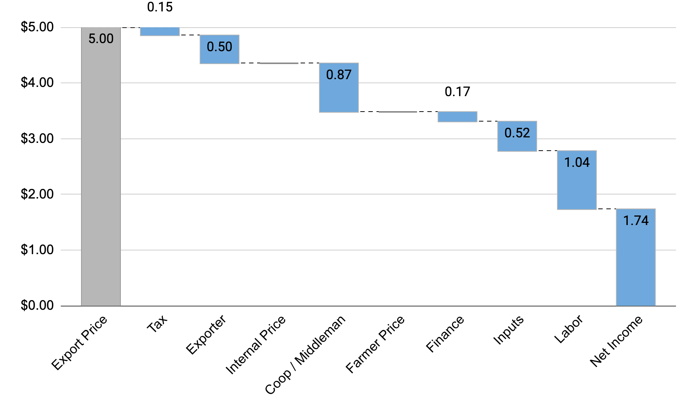
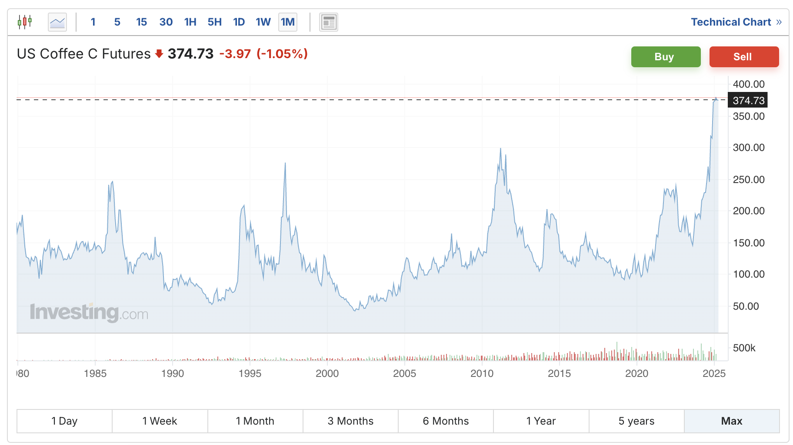
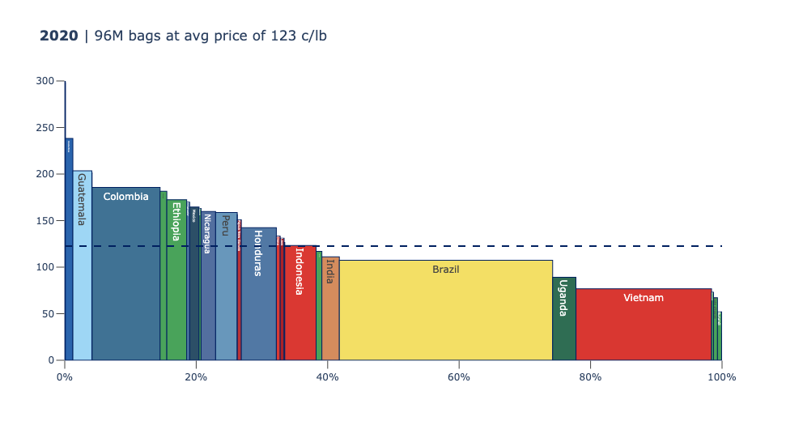

Value Chain Analysis: Lecture Notes¶
Table of Contents¶
- Coffee 101
- The Global Coffee Market
- The VCA Framework
- From Analysis to Action
- Practical Advice for Fieldwork
- Open Questions in Coffee
1. Coffee 101¶
Coffee is a fruit. It grows on trees in the tropics, roughly between the Tropics of Cancer and Capricorn. About 20 countries produce coffee at scale (Brazil, Vietnam, Colombia, Indonesia, Ethiopia, Honduras, India, Uganda, Peru, Guatemala, among others), and another 30 or so produce smaller volumes. What we call the "bean" is actually the seed inside the coffee cherry.
The transformation from cherry to cup involves a series of distinct stages, each with different actors, different economics, and different risks. For a detailed visual walkthrough of each stage with photographs, see The Coffee Value Chain: From Cherry to Cup.
The Processing Chain¶
The chain moves through six stages: cherry (fruit on the tree, harvested by hand on smallholder farms) → parchment (de-pulped and washed or dried naturally) → green (hulled, graded, and packed for export) → roasted (blended and roasted to profile) → ground (packaged for retail) → cup (brewed and consumed).
Each stage involves different actors operating at different scales, from 12.5 million farms to fewer than 10,000 international traders. This course focuses on the first three stages, farm to export, where development interventions target, where the economics are most opaque, and where the data challenges are greatest.
The Hourglass¶
The structure of the coffee value chain resembles an hourglass. The chain narrows from ~12.5 million farms to fewer than 10,000 traders, then widens again to over a billion consumers. (See The Coffee Value Chain for the full breakdown.) This hourglass shape has profound implications for bargaining power, information flow, and price transmission.
Natural and logistical factors make it difficult for any single actor to occupy more than one or two roles in the chain. A farmer who grows cherry in rural Ethiopia faces entirely different capital requirements, skill sets, and market relationships than a trader who aggregates containers in Addis Ababa or a roaster who blends and packages in Hamburg. There are exceptions (vertically integrated operations do exist), but they are rare relative to the overall market.
Scope of This Course¶
This course focuses on the first three stages: cherry, parchment, and green. Farm to export.
2. The Global Coffee Market¶
The $4/Kilo to $4/Cup Problem¶

Here is the framing that anchors this entire course. At historically typical prices, a coffee farmer in a producing country sells a kilogram of coffee for roughly $3-5. A consumer in New York, London, or Tokyo pays $4-6 for a single cup. A kilogram of green coffee produces roughly 50 cups. So the farmer gets $4 for what eventually becomes $200+ worth of coffee at the retail level. (Note: coffee prices have been at historic highs since late 2024, with Arabica exceeding $8/kg — but the structural gap between farm-gate and retail remains.)
The value chain in between explains where the difference goes. Some of it is legitimate value addition: roasting, packaging, transport, retail labor, rent. Some of it reflects market power and information asymmetry. Understanding which is which, and what can be changed, is the core analytical challenge of VCA.
Supply and Demand¶
Global coffee consumption has grown steadily for decades, driven by rising incomes in consuming countries and the expansion of coffee culture into markets like China, South Korea, and the Middle East. Demand is relatively stable and predictable year over year.
Production, by contrast, is volatile. Coffee trees are perennial crops with a 2-3 year lag between planting and first harvest. Weather events (frost in Brazil, drought in Vietnam, excessive rain in Central America) can wipe out significant portions of a harvest. Coffee leaf rust (la roya), a fungal disease, devastated Central American production in 2012-2013. Policy changes (export taxes, currency devaluations, land reform) add another layer of unpredictability.
The Coffee Crisis¶

In the early 2000s, a production surplus caused by aggressive expansion in Brazil and Vietnam drove global coffee prices to historic lows. This period, roughly 2001-2003, is known as the "coffee crisis." ICE Arabica futures dipped below $0.50 per pound, spending nearly 200 trading days below that threshold, well below the cost of production for most origins.
Brazil and Vietnam had a structural cost advantage, with lower labor costs, higher labor efficiency (particularly in mechanized Brazilian farms and high-density Vietnamese plantations), and newer, more productive tree stock. They could survive at prices that were ruinous for producers in higher-cost countries like Ethiopia, Kenya, Guatemala, and Rwanda.
The crisis pushed millions of smallholders into deeper poverty. Many abandoned coffee entirely. It also catalyzed the growth of the specialty coffee and Fair Trade movements, which sought to decouple at least some producers from the volatility of commodity markets.
Price Benchmarks¶
Coffee prices are benchmarked to two major futures contracts:
- ICE "C" Contract (New York): the global benchmark for Arabica coffee, quoted in US cents per pound
- ICE London: the global benchmark for Robusta coffee, quoted in US dollars per metric ton
Physical coffee trades at a differential to these benchmarks. A Colombian Supremo might trade at "C + 20" (20 cents per pound above the C price). A lower-grade Brazilian might trade at "C - 10." These differentials reflect quality, reliability, and demand.
Big commodity producers (Brazil, Vietnam, Indonesia) tend to receive lower per-kilogram prices because they produce high volumes of standard-grade coffee. Specialty and premium origins (Colombia, Ethiopia, Kenya, Guatemala) receive higher prices per kilogram but produce less total volume. This is a recurring tension: volume versus value.
3. The VCA Framework¶

Value chain analysis follows three steps that build on each other: Map, Breakdown, and Benchmark. Each step generates a specific output and raises specific questions. You cannot do a credible breakdown without first having a map, and you cannot benchmark meaningfully without understanding the breakdown.
Map¶
The first step is to identify the actors, understand what they do, and trace how they relate to each other. For coffee, the generic chain looks like this:
Input Supply → Production → Processing → Wholesale → Export
From export, the chain splits into two broad channels: - Global market, the vast majority of coffee by volume, traded as a commodity or specialty product to importing countries - Local market, domestic consumption, which ranges from negligible (Rwanda exports about 98% of its production) to substantial (Brazil consumes roughly 40% of what it produces)
At each stage, you need to identify:
- Who are the actors? Smallholder farmers, estate farms, cooperatives, private wet mills, dry mills, exporters, government marketing boards, local traders (often called "collectors" or "middlemen"), input suppliers, transport companies.
- What do they do? Each actor transforms the product, aggregates it, transports it, or adds information (grading, certification, quality assessment).
- How do they relate? Vertical relationships (buyer-seller), horizontal relationships (cooperatives, associations), and institutional relationships (government regulators, extension services, donors).
Important distinctions to capture in your map: - Washed vs. natural (unwashed) channels, which often involve different actors and different economics - Cooperative vs. private channels, where cooperatives aggregate smallholder production and may capture processing margins that would otherwise go to private intermediaries - Export vs. domestic channels, with different quality standards, different pricing, different actors
The map is your foundation. Everything else builds on it. A good map makes the subsequent analysis straightforward. A sloppy map means you will miss actors, misattribute costs, and draw wrong conclusions.
Breakdown¶
The second step is to trace costs and revenues through the chain, understanding how value flows from one actor to the next. This is where the real analytical work happens.
Start at the export price. The export price is usually the most publicly available and reliable data point. Sources include COMTRADE (the UN trade statistics database), national coffee boards (ANACAFE in Guatemala, NAEB in Rwanda, the Ethiopia Commodity Exchange or ECX in Ethiopia), and ICO (International Coffee Organization) data. Export prices are quoted in standard units, typically USD per pound or USD per kilogram of green coffee.
Then go to the farmer level. Farmer prices are harder to get. They require either literature review (published studies, NGO reports, government surveys) or direct field interviews. Farmer prices are quoted in local currency per local unit of whatever product form the farmer sells, which is often cherry, not green coffee.
The conversion problem. Comparing farmer prices to export prices requires a series of conversions. This is one of the most common sources of error in VCA work. You need to convert:
- Currency — local currency to USD
- Weight — local units to standard units (kg to lb, or vice versa)
- Product form — cherry to green (or parchment to green)
Here is a worked example from Rwanda:
Starting points: - Export price = $2.23/lb green - Farmer price = 500 RWF/kg cherry
Step 1: Convert currency (500 RWF/kg cherry) x (0.00076 USD/RWF) = $0.38/kg cherry
Step 2: Convert weight ($0.38/kg cherry) x (0.45 kg/lb) = $0.17/lb cherry
Step 3: Convert product form ($0.17/lb cherry) x (7 cherry/green) = $1.20/lb green (Why multiply? Because it takes 7 lbs of cherry to make 1 lb of green, each pound of green embodies 7x the cherry value.)
Step 4: Calculate share ($1.20/lb green) / ($2.23/lb green) = 54% farmer share
Ethiopia's 2024 birr float (from ~55 to ~127 ETB/USD) is a live example of how currency movements can reshape VCA results overnight.
The conversion ratio of 7:1 (cherry to green) is specific to Rwanda, where high altitude increases the ratio. Across Arabica origins more broadly, the ratio ranges from about 6:1 to 7:1, depending on species, varietal, and agro-climatic conditions (including altitude), not processing method. A washed coffee and a natural coffee from the same origin will have essentially the same net cherry-to-green conversion. Robusta, by contrast, has a lower ratio of approximately 5:1. Getting the species and origin wrong will throw off your entire analysis.
Fill in the middle. Once you have the export price and the farmer price, you need to figure out where the money goes in between. Processing costs (wet milling, dry milling), transport costs (from farm to mill, mill to port), taxes and fees (export taxes, cooperative levies, certification costs), and trader margins all need to be estimated. Each of these should be collected through interviews.
Estimate costs of production. Finally, you want to understand the farmer's cost of production: what it actually costs to grow and harvest a kilogram of cherry. This is notoriously difficult to estimate for smallholders. Family labor is rarely costed. Land has no formal market price in many contexts. Inputs may be subsidized or donated. Published estimates vary widely. Approach these numbers with caution and always state your assumptions.
The waterfall chart. The standard visualization for a VCA breakdown is the waterfall chart. It shows how value accumulates from the farmer's cost of production through each intermediate stage to the export price (or beyond, to the retail price). Each bar represents the margin or cost added at a given stage. Reading left to right, you can see exactly where the money goes, and where it might be leaking or concentrated.
Benchmark¶
The third step is to compare your findings against peer countries, competing commodities, or the same country over time. Benchmarking puts your numbers in context and helps identify where the real problems and opportunities lie.
Key metrics for benchmarking:
-
Farm yields (metric tons of green coffee per hectare): This is the single most important productivity metric. The range across major origins is enormous. Vietnam achieves the highest yields globally at 3+ MT/ha, thanks to intensive Robusta cultivation with irrigation and heavy fertilizer use. Brazil follows at roughly 1.5-2.0 MT/ha. Ethiopia, despite being the birthplace of Arabica coffee, has among the lowest yields of any major origin, often below 0.5 MT/ha. The gap is driven by tree varieties, input use, planting density, and management practices.
-
Prices received (USD per kg green equivalent): What farmers actually get, after all conversions. Higher prices may reflect quality premiums, geographic advantages, or certification programs.
-
Farmer share of export price: The percentage of the FOB export price that reaches the farmer. In most coffee-producing countries, farmers receive more than 50% of the export price. Vietnam is best in class at ~95%. Brazil varies widely by farm type (70-90%). Latin American origins like Colombia and Honduras typically fall around 80%. Africa shows the most variation: Ethiopia is around 65%, while Rwanda, where processing costs are high and institutional levies are significant, sits around ~54%, near the low end globally.
-
Cost of production (USD per kg green equivalent): What it costs the farmer to produce. If the cost of production exceeds the price received, the farmer is losing money on every kilogram. This is more common than you might think.
A note on time: Farmer share figures are point-in-time estimates, not permanent characteristics of a value chain. They move with exchange rates, global prices, and local cherry prices. The Vietnam 95%, Rwanda 54%, and Ethiopia 65% figures in this course are snapshots from specific crop years. When comparing across countries, use the same year or adjacent years.
Always benchmark on multiple metrics. A single number can be misleading. A country might have high farmer prices but low yields, meaning farmers earn less per hectare even though they earn more per kilogram. Or a country might have a high farmer share of the export price but a very low export price, meaning the farmer's absolute income is still poor.
Benchmarking also reveals whether problems are structural (geography, farm size, climate), policy-driven (taxes, trade regulations, price controls), or market-driven (global price levels, quality premiums, buyer preferences). The right intervention depends entirely on the diagnosis.
4. From Analysis to Action¶
The Impact-Feasibility Matrix¶
The VCA deliverable is not a map or a waterfall chart. It is a set of recommendations that someone can act on. The bridge from VCA findings to recommendations runs through the impact-feasibility matrix, a simple 2x2 grid that forces you to be honest about what is worth pursuing.
| High Feasibility | Low Feasibility | |
|---|---|---|
| High Impact | Do this first | Worth pursuing but harder |
| Low Impact | Easy wins, limited value | Don't bother |
High impact + high feasibility: these are your priority recommendations. Act on them.
High impact + low feasibility: these are worth pursuing but require more resources, longer timelines, or political will that may not exist. Flag them, make the case, but don't pretend they are easy.
Low impact + high feasibility: tempting because they are achievable, but be honest that the payoff is limited. Donors and governments love these because they can show quick results. The question is whether quick results matter if they don't move the needle.
Low impact + low feasibility: don't bother. Skip this quadrant.
Four Generic Recommendations¶
Almost every coffee VCA arrives at some version of these four recommendations. The question is not whether they appear. It is where they land on the matrix for a given country.
1. Help smallholders improve quality and productivity. This is the most common recommendation in development-oriented VCA. Improve yields through better agronomic practices (pruning, mulching, shade management, replanting with improved varieties). Improve quality through better post-harvest handling (timely picking, careful processing, proper drying). The logic is straightforward: higher yields and higher quality mean more income per hectare. The challenge is delivery: reaching millions of dispersed smallholders with training and inputs is expensive and slow.
2. Transfer a higher share of the export price to the farmer. Shorten the chain. Reduce the number of intermediaries. Improve price transparency so farmers know what their coffee is worth. Strengthen cooperatives so farmers have more bargaining power. This recommendation is high priority in countries where the farmer share is low (Rwanda at ~54%, for instance). It is low priority in countries where the farmer share is already high (Vietnam at 95%). You cannot squeeze margins that are already thin.
3. Export roasted coffee direct to consumers. Move up the value chain. Instead of exporting green coffee at $3-5/kg, export roasted coffee at $15-30/kg. Capture the value added by roasting in the producing country. This is an appealing idea that is extremely difficult to execute. Roasting requires capital equipment, quality control expertise, and, most critically, access to consumer markets dominated by established brands with massive distribution networks. Very few producing countries have succeeded at this at meaningful scale.
4. Boost local coffee consumption. If your domestic market is large and growing, you can reduce dependence on volatile export markets. Brazil and Colombia have strong domestic coffee cultures. Ethiopia has significant local consumption. But for many producing countries (Rwanda, Burundi, Uganda), domestic consumption is negligible. You cannot create a coffee culture overnight, and in countries where most of the population drinks tea or cannot afford specialty-grade coffee, this recommendation has very low feasibility.
Context Determines Everything¶
Where each recommendation lands on the matrix depends entirely on country context. Consider two examples:
"Transfer a higher share to the farmer" is a low priority in Vietnam, where farmers already receive roughly 95% of the export price. The chain is short and efficient; commercial farms sell directly to traders with minimal intermediation. But it is a high priority in Rwanda, where farmers receive about 54% of the export price, and cooperatives, mills, and exporters capture the rest.
"Boost local consumption" is feasible in Colombia, which has a strong domestic market, a national coffee brand (Juan Valdez), and a growing specialty cafe scene. It has very low feasibility in Rwanda, where 98% of production is exported and the domestic market is tiny.
Segmentation¶
One-size-fits-all solutions are rare in coffee. What works for a commercial 5-hectare farm in Vietnam, with irrigation, mechanization, and direct access to traders, will not work for a 0.1-hectare subsistence farm in Rwanda, where the farmer may grow coffee on a hillside plot alongside beans and bananas, process cherry by hand, and sell to a local collector who pays cash on the spot.
Good recommendations are segmented. They identify distinct producer types (by farm size, geography, market channel, quality level) and tailor strategies accordingly. A national coffee strategy that treats all farmers the same will underserve most of them.
5. Practical Advice for Fieldwork¶
Before You Go¶
Understand the context. Before you start mapping the value chain, understand the country. Read the political history. Understand the land tenure system. Know the major ethnic and regional dynamics. Learn what happened to the coffee sector during structural adjustment, during conflict (if applicable), during commodity booms and busts. Rwanda's coffee sector cannot be understood without the genocide and the government's top-down reconstruction. Ethiopia's cannot be understood without the ECX. Context first. A value chain analysis that ignores context will produce technically correct but practically useless recommendations.
Identify the right mix of stakeholders. Your interview list should not be limited to the obvious actors like farmers and exporters. Input suppliers know what farmers are buying and what they can afford. Transporters know the real costs of moving coffee from farm to mill to port. Government officials know the regulatory environment and where the political constraints are. NGOs and donor agencies know what interventions have been tried and which ones failed. Extension agents know what actually happens on the ground, as opposed to what headquarters thinks is happening. Cast a wide net.
Talk through hypotheses with experts early. Do not wait until the analysis is done to get feedback. Share your preliminary map, your early price data, and your emerging hypotheses with people who know the sector: country experts, industry veterans, experienced consultants. They will tell you what you are missing, where your numbers look wrong, and which assumptions are unrealistic. An hour of expert feedback early in the process can save weeks of wasted analysis.
In the Field¶
Get diverse opinions. Do not rely on a single perspective. A cooperative manager will tell you the cooperative channel works well. A private trader will tell you cooperatives are inefficient. A government official will tell you the policy environment is supportive. A farmer may tell you something different from all three. Triangulate. When three independent sources give you the same story, you are probably close to the truth. When they diverge, you have found something interesting worth investigating further.
Corroborate numbers with different sources. This is the single most important data quality practice. If two independent sources (say, a cooperative manager and an exporter) give you the same farm-gate price for cherry in a given region, you can use that number with confidence. If they disagree by 50%, you need to investigate further. In VCA work, a number that comes from only one source should be treated as an estimate, not a fact. Label it accordingly.
Make it easy for people to give you data. People in the coffee industry are busy. If you want data (production figures, price records, cost structures), make it easy to share. Have a simple template ready. Offer to sign an NDA if they are concerned about confidentiality. Do not show up to a meeting with a 40-question survey and expect someone to fill it out on the spot. Short, focused asks get better responses than comprehensive but burdensome ones.
Go both downstream and upstream. There are two ways to trace a value chain. Downstream: start at the farm and follow the product forward through processing, trading, and export. Upstream: start at the buyer (an importer, a roaster, a retailer) and trace backward to the source. Both approaches have value. Going downstream gives you the farmer's perspective and reveals the full sequence of transformations. Going upstream gives you the buyer's perspective and reveals what the market actually demands. The best analyses do both.
Back at the Desk¶
Cross-check official statistics. National production figures, area under cultivation, number of registered farmers: these numbers come from government agencies that may not have the budget, capacity, or incentive to maintain accurate records. Cross-check with industry sources: exporter associations, international organizations (ICO, World Bank), NGO reports, and academic studies. When official numbers and industry numbers diverge significantly, note the discrepancy and explain which source you trust more and why.
Segment, don't generalize. The "average farmer" is a statistical fiction. In any given country there are subsistence farmers growing coffee on tiny plots alongside food crops, semi-commercial farmers investing in quality improvements, and commercial operations running hundreds of hectares. Their cost structures, quality levels, market access, and risk profiles are fundamentally different. Your analysis and your recommendations should reflect this.
Keep presentations simple. When you present findings, less is more. One message per slide. One chart per slide. No walls of text. No tables with 15 columns. The waterfall chart, the map, the benchmark comparison: each of these should be immediately readable. If your audience is squinting, the slide has too much on it. The detailed analysis goes in the report. The slides tell the story.
6. Open Questions in Coffee¶
These are questions that do not have definitive answers today. They matter for policy, for investment, and for the livelihoods of millions of people. If you find yourself drawn to any of them, there is meaningful research to be done.
How many coffee farmers are there in the world?¶
The most commonly cited number is "25 million," but this estimate is decades old, and its original source is unclear. More recent work by Enveritas, based on satellite mapping and household surveys, puts the number at approximately 12.5 million farms. The true number depends on how you define "coffee farmer" — does a household that grows 50 trees alongside maize and beans count? The answer matters enormously for targeting interventions, estimating the sector's poverty footprint, and making claims about coffee's development impact.
What percentage of the world's coffee comes from smallholders?¶
The standard claim is "over 95%," and it appears in virtually every coffee industry report. But the definition of "smallholder" varies. Is it less than 2 hectares? Less than 5? Less than 10? And the claim may overcount countries where large estates are significant (Brazil, Vietnam). Getting this right matters for the design of sustainability programs and the allocation of development funding.
How many coffee households live below the global poverty line?¶
We know that many coffee-growing regions overlap with areas of deep poverty. But a precise global estimate does not exist. Household surveys are expensive, definitions of poverty vary, and coffee income is often just one component of a diversified livelihood. A precise answer would force the sustainability conversation to get specific about who is poor and where.
How many coffee farming families will lose a child before the age of five?¶
This is a harder question and a more uncomfortable one. Under-five mortality rates in major coffee-producing regions of sub-Saharan Africa and South Asia remain tragically high. Connecting child mortality data to coffee-producing areas at a granular level would make the human cost of low coffee prices viscerally concrete. That number does not exist yet. Building it is a hard data problem with real policy implications.
How many workers are there in the coffee industry?¶
The full chain, from farm labor to seasonal harvesters to mill workers to truck drivers to port handlers to baristas, employs a large number of people. Older industry estimates cite 100-125 million, but a rough bottom-up calculation suggests the real number may be lower: 12.5 million farms × roughly 5 people per household = ~62 million in farming households, plus an estimated 10 million additional paid workers in processing, transport, and trade. Retail employment (baristas, cafe staff) in consuming countries adds more, but rigorous counting has never been done. The number matters for understanding coffee's economic footprint and for labor rights advocacy.
How many plots of coffee need to be mapped to meet EU deforestation requirements?¶
The EU Deforestation Regulation (EUDR) requires that commodities imported into the EU, including coffee, be traceable to the plot of land where they were produced and verified as deforestation-free. For a sector with an estimated 12.5 million farms, many of them unmapped and unregistered, the logistical challenge is immense. Estimating the true scope of the mapping task is an open problem with enormous commercial and policy implications.
How has the real price of coffee changed over the past 100 years?¶
Nominal coffee prices are readily available. Real prices, adjusted for inflation, tell a different story. There is evidence that the real price of coffee has declined substantially over the past century, meaning that farmers today receive less in purchasing-power terms than their grandparents did. But constructing a reliable long-run real price series requires careful choices about deflators, exchange rates, and quality adjustments. The trend line matters for understanding whether the economics of smallholder coffee farming are sustainable in the long run.
Where will the next 10 million bags of coffee come from — and who will buy it?¶
Global demand continues to grow. Supply must grow with it. Will the additional volume come from yield improvements in existing producing countries? From expansion into new areas (and at what environmental cost)? From new producing countries entering the market? And on the demand side, will the growth come from traditional consuming markets or from emerging markets like China, India, and Southeast Asia? The answers will reshape the geography of the coffee industry over the next two decades.
These notes cover the stable, year-over-year foundations of value chain analysis as applied to coffee. Slides and in-class discussion will layer on current data, recent case studies, and country-specific examples that change from year to year.